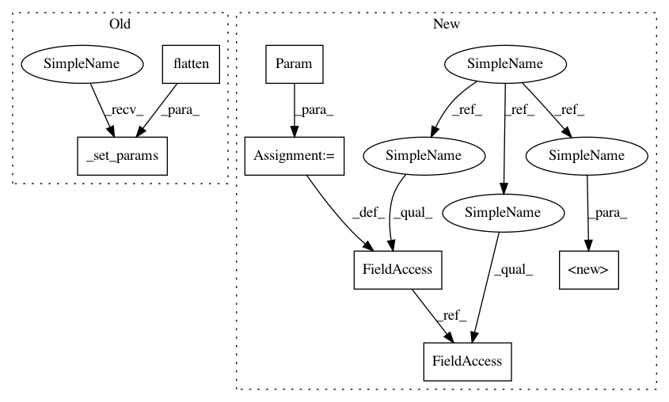

8c02e4af36c56f0cac7edc22d3caa8e96e559655,GPy/kern/parts/rbf_inv.py,RBFInv,__init__,#RBFInv#Any#Any#Any#Any#,35
Before Change
else:
inv_lengthscale = np.ones(self.input_dim)
self._set_params(np.hstack((variance, inv_lengthscale.flatten())))
// initialize cache
self._Z, self._mu, self._S = np.empty(shape=(3, 1))
self._X, self._X2, self._params = np.empty(shape=(3, 1))
After Change
.. Note: this object implements both the ARD and "spherical" version of the function
def __init__(self, input_dim, variance=1., inv_lengthscale=None, ARD=False):
//self.input_dim = input_dim
//self.name = "rbf_inv"
super(RBFInv, self).__init__(input_dim, variance=variance, lengthscale=1./np.array(inv_lengthscale), ARD=ARD, name="inverse rbf")
self.ARD = ARD
if not ARD:
self.num_params = 2
if inv_lengthscale is not None:
inv_lengthscale = np.asarray(inv_lengthscale)
assert inv_lengthscale.size == 1, "Only one lengthscale needed for non-ARD kernel"
else:
inv_lengthscale = np.ones(1)
else:
self.num_params = self.input_dim + 1
if inv_lengthscale is not None:
inv_lengthscale = np.asarray(inv_lengthscale)
assert inv_lengthscale.size == self.input_dim, "bad number of lengthscales"
else:
inv_lengthscale = np.ones(self.input_dim)
self.variance = Param("variance", variance)
self.inv_lengthscale = Param("sensitivity", inv_lengthscale)
self.inv_lengthscale.add_observer(self, self.update_inv_lengthscale)
self.remove_parameter(self.lengthscale)
self.add_parameters(self.variance, self.inv_lengthscale)
//self._set_params(np.hstack((variance, inv_lengthscale.flatten())))
// initialize cache
In pattern: SUPERPATTERN
Frequency: 3
Non-data size: 7
Instances
Project Name: SheffieldML/GPy
Commit Name: 8c02e4af36c56f0cac7edc22d3caa8e96e559655
Time: 2013-11-06
Author: ibinbei@gmail.com
File Name: GPy/kern/parts/rbf_inv.py
Class Name: RBFInv
Method Name: __init__
Project Name: SheffieldML/GPy
Commit Name: 8c02e4af36c56f0cac7edc22d3caa8e96e559655
Time: 2013-11-06
Author: ibinbei@gmail.com
File Name: GPy/kern/parts/rbf_inv.py
Class Name: RBFInv
Method Name: __init__
Project Name: SheffieldML/GPy
Commit Name: d3721b76a8ec4f98932474834ca9add20e7f04e8
Time: 2013-10-25
Author: ibinbei@gmail.com
File Name: GPy/kern/parts/linear.py
Class Name: Linear
Method Name: __init__
Project Name: SheffieldML/GPy
Commit Name: 21dd82f8d95be737999e53c638e6f062d7039a19
Time: 2013-10-22
Author: ibinbei@gmail.com
File Name: GPy/kern/parts/bias.py
Class Name: Bias
Method Name: __init__